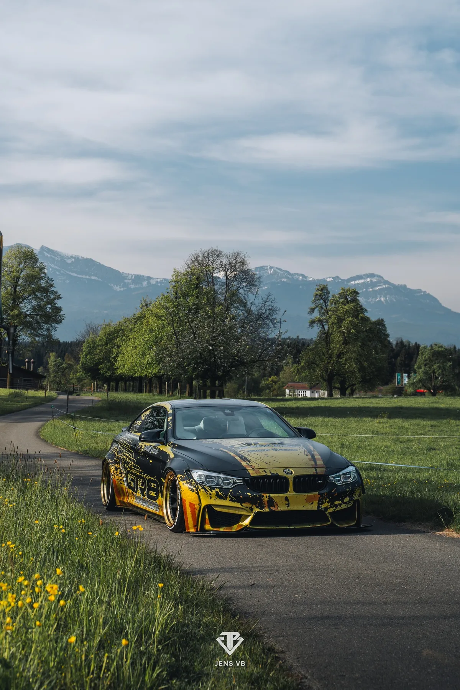
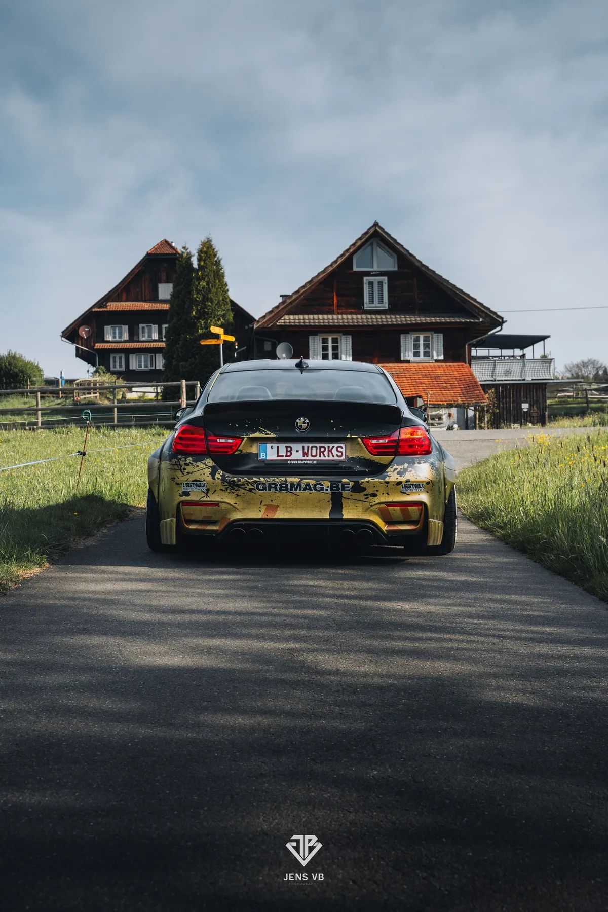
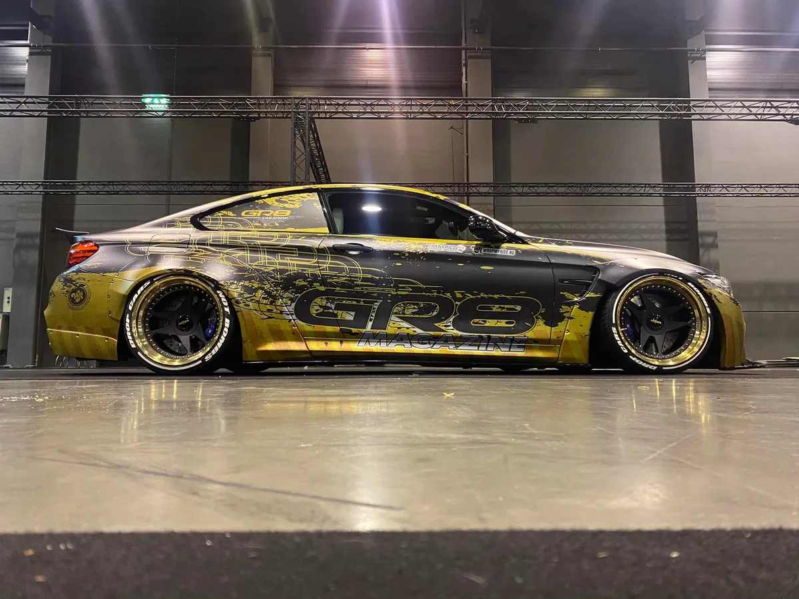
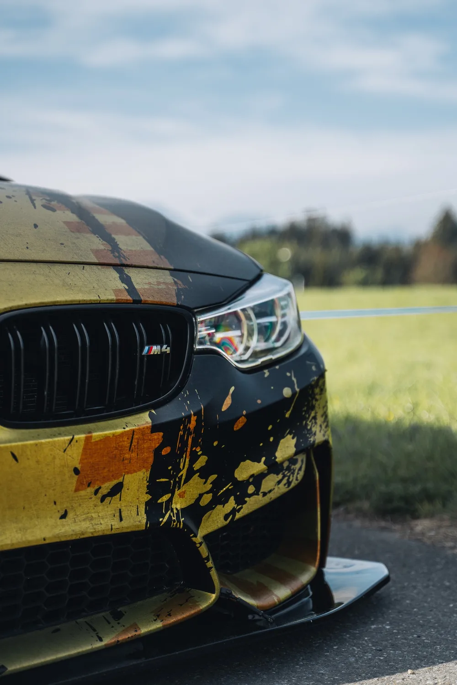
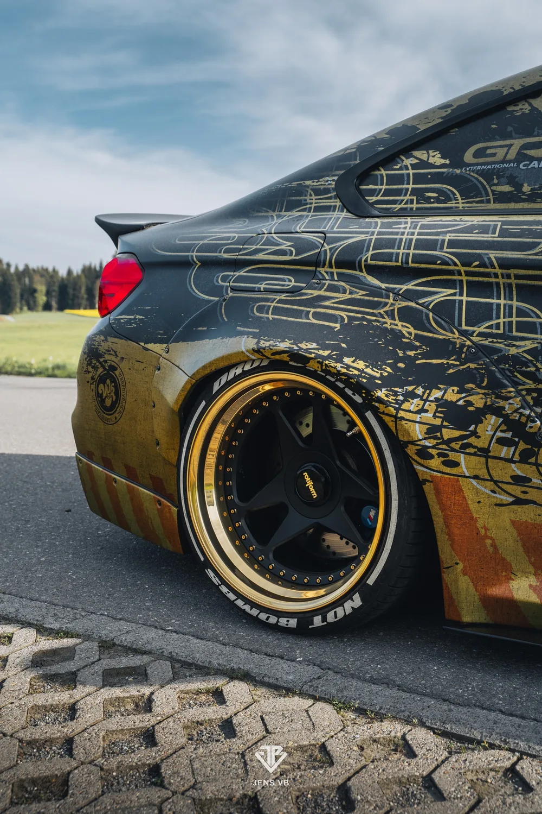
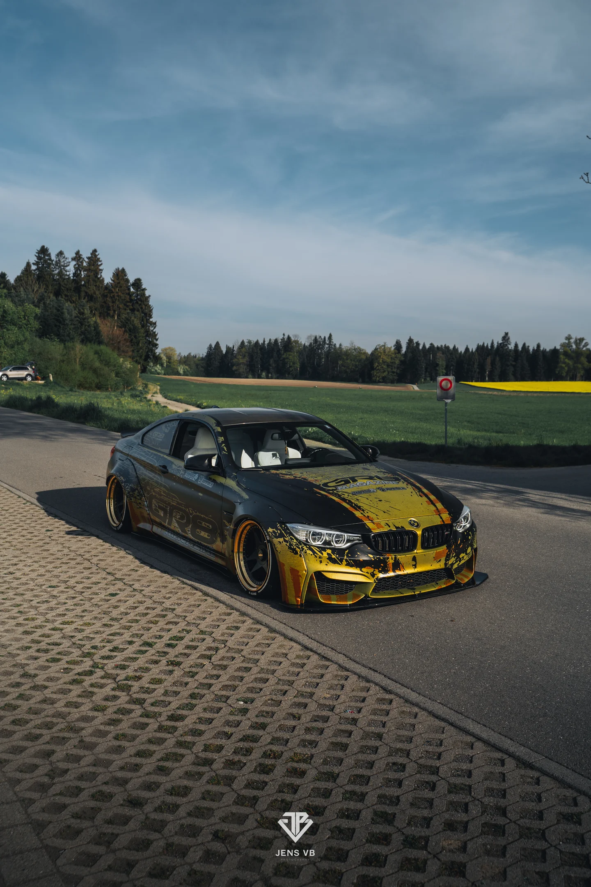

GR8 Magazine is one of Belgium's most recognized automotive media brands. Their BMW M4 Liberty Walk is more than a car — it's a mobile cover page. Every event, every photoshoot, every social post: this livery represents the brand.
The brief was deceptively simple: make the car unmistakably GR8. The institutional yellow had to dominate. The Liberty Walk widebody had to feel intentional, not decorated. And the design had to hold up across editorial photography, expo floors, smartphone snapshots, and 100-pixel thumbnails.
Two colors. Zero compromises.






Two Colors.
Three Reading Distances.
The GR8 yellow isn't a design choice — it's the brand's DNA. Sampled directly from the original vector file, calibrated through physical material tests with the installer before production. No Pantone guessing. No screen-only approvals.
The design operates on three simultaneous scales. At 30 meters: instant brand recognition — that yellow is GR8, period. At 5 meters: the compositional architecture reveals itself — controlled splatter that follows the body lines, typography integrated into the distress layers, not placed on top. At 1 meter: the hidden details emerge — micro-textures, drip lines, the wireframe GR8 logo woven through the chaos.
The Liberty Walk widebody added 10–15 cm per side. Most designers would extend the pattern. We treated each flare as a dedicated compositional zone — breathing space where the yellow dominates, counterbalancing the density of the central body.
The hood is the front cover of a magazine on wheels. Centered, symmetrical, with credits laid out like a colophon. Every overhead shot is a cover shot. Designed knowing exactly how the car would be photographed.
What Makes This
an FRD Project.
Controlled
Chaos
The "dirt" aesthetic is a system, not an effect. Three texture scales — large ink throws, fine mist, vertical drip lines — layered with surgical precision. It looks spontaneous. It's calculated.
Integrated
Typography
The GR8 logo lives inside the design, not on top of it. Wireframe treatment lets the distress layer pass through the letterforms. Branding and design share the same space — the mark of professional-grade work.
The Hood
as Cover Page
For a magazine's car, the hood is the front cover. Centered composition, credits like a colophon. Every overhead photo is a cover shot. Designed knowing exactly how this car would be seen.
Design: Frank Ricci Design — Installation: Wrap My Ride — Platform: GR8 Magazine